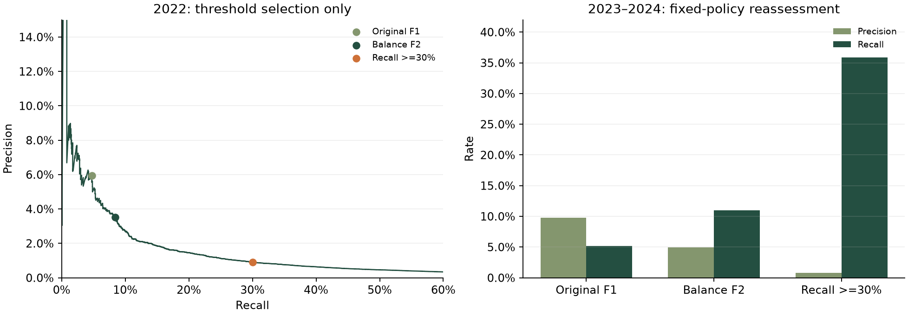

← Вернуться к картеSTEPPE / РЕЖИМЫ ПРЕДУПРЕЖДЕНИЙ V2
Больше обнаруженных событий.
Измеримый компромисс.
По умолчанию на карте — «Баланс · F2». Порог 2,25% выбран по максимуму взвешенного F2 на 2022 году. В формуле F2 полнота получает больший вес. XGBoost, калибровка и сами вероятности не менялись.
Все новые пороги выбраны только по 2022 году. Данные 2023–2024 использованы после фиксации порогов для повторной оценки. Их результаты уже были опубликованы ранее: это повторная проверка на прежнем тесте, а не новая независимая контрольная выборка.
Результат на 2023–2024
| Режим | Порог | Precision | Recall | F1 | F2 | Доля сигналов* | Сигналы на полной сетке** |
|---|
| Прежний · F1 | 4,73% | 9,76% | 5,16% | 0.0675 | 0.0570 | 0,01% | 9,940 |
| Баланс · F2 | 2,25% | 4,94% | 10,98% | 0.0681 | 0.0882 | 0,04% | 38,648 |
| Охват ≥30% | 0,50% | 0,81% | 35,90% | 0.0159 | 0.0372 | 0,87% | 703,482 |
* Доля ячеек-дней по выборке с весами отбора. ** Точное число ячеек-дней с предупреждением по всем 731 картам; несколько суток одной ячейки считаются отдельно. Это разные оценки нагрузки, их не следует отождествлять.
Полнота режима F2: 95% интервал 8,72%–13,61%. Парный 95% интервал прироста F2 относительно прежнего режима: 0.0232–0.0395. Использованы 1000 одинаковых блочных повторов: 100 км × 30 дней.
Больший охват сопровождается большим числом ложных сигналов. «Охват ≥30%» означает ограничение на полноту в 2022 году; на иной дате или территории этот уровень не гарантируется. Цель — первые спутниковые обнаружения новых растительных пожаров в ячейках 5 × 5 км, без оценки ущерба.

Данные, по которым выбирались пороги: 2022
| Режим | Precision | Recall | F2 |
|---|
| Прежний · F1 | 5,95% | 4,74% | 0.0494 |
| Баланс · F2 | 3,51% | 8,43% | 0.0658 |
| Охват ≥30% | 0,91% | 30,01% | 0.0405 |
197 096 строк, 10 115 положительных. Отрицательные примеры имеют веса отбора. Общая исходная частота событий с учётом весов: 0,03%. Прежний режим максимизирует F1; «Баланс» — F2; «Охват» — F2 при recall ≥30%. При равенстве целевой функции выбирается наибольший порог.
Порядок работы и воспроизводимость
- Проверены контрольные суммы исходной модели, калибровки и релиза.
- Открыта только таблица 2022 года; построена взвешенная precision-recall кривая.
- Зафиксированы три порога и режим по умолчанию. Время фиксации: 2026-10-23T06:05:15.946461+00:00.
- Только после фиксации применены пороги к сохранённым вероятностям 2023–2024; повторного обучения и выбора порога по тесту не было.
- Проверено совпадение решений на float32-картах с оценкой. Контрольные суммы всех 731 файлов вероятностей проверены; пропуски не заполнены.
AP = 0,02045, ROC-AUC = 0,9237 и Brier прежние: изменение порога не улучшает ранжирование или вероятности. Карта остаётся ретроспективной; пригодность для текущих оперативных предупреждений не подтверждена.
SHA-256 политики: 77328706da088f98aec98a38710a4396c7bb3a7ed5bd2aff94097f5098a395eb
SHA-256 исходного релиза: 0b5ccd072c5f17df17144cde70fc71e46a52cfe8af628387cba66183b80b087a